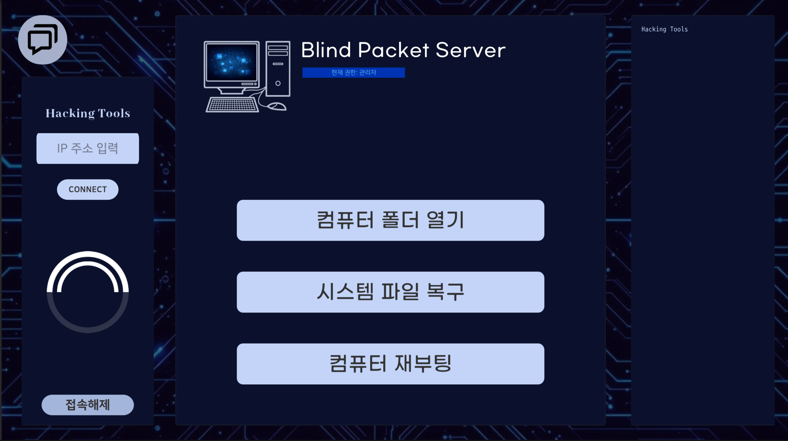
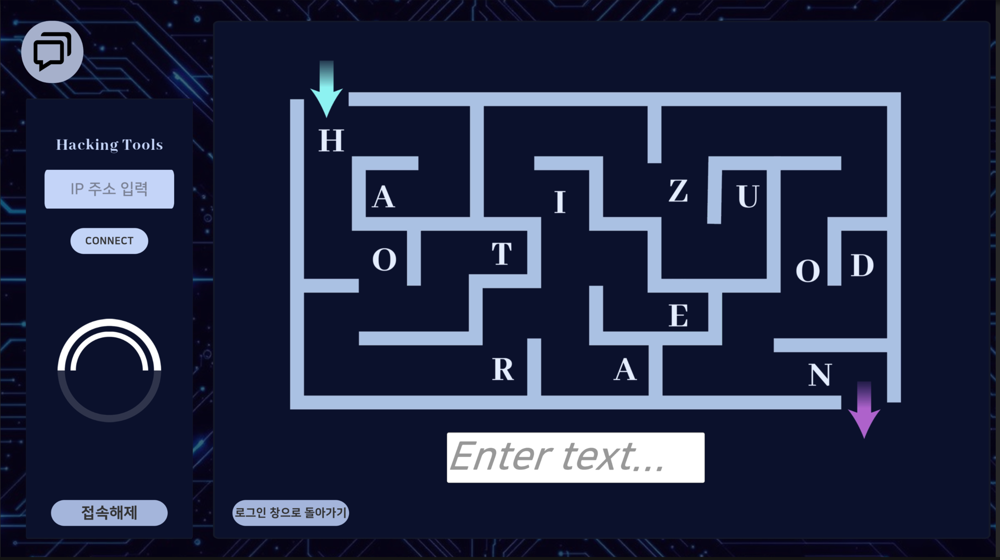
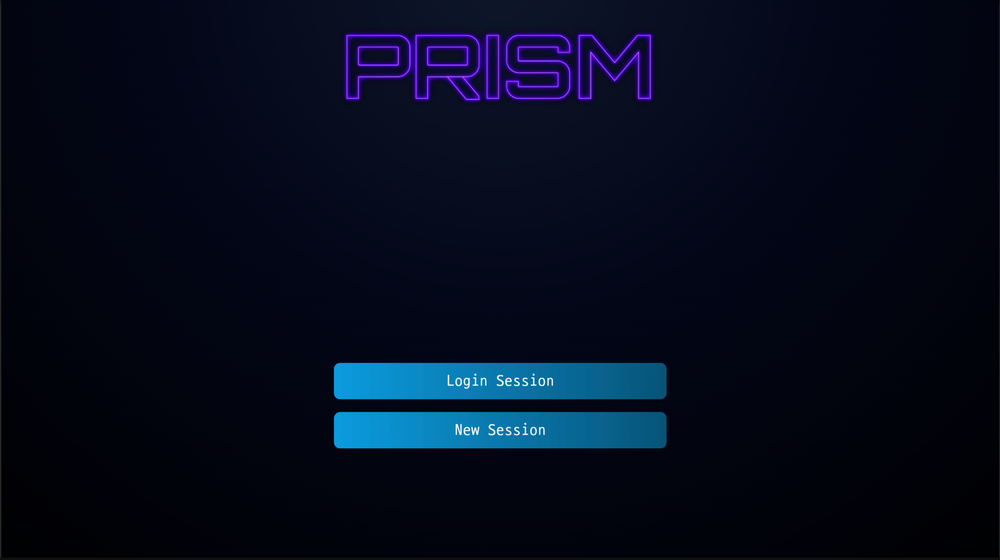
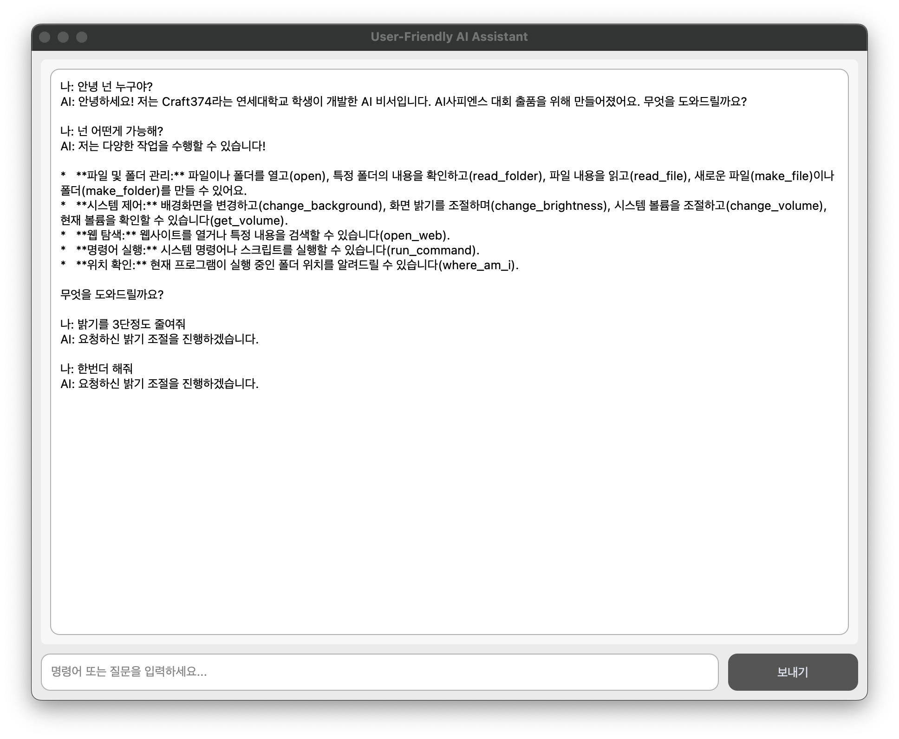
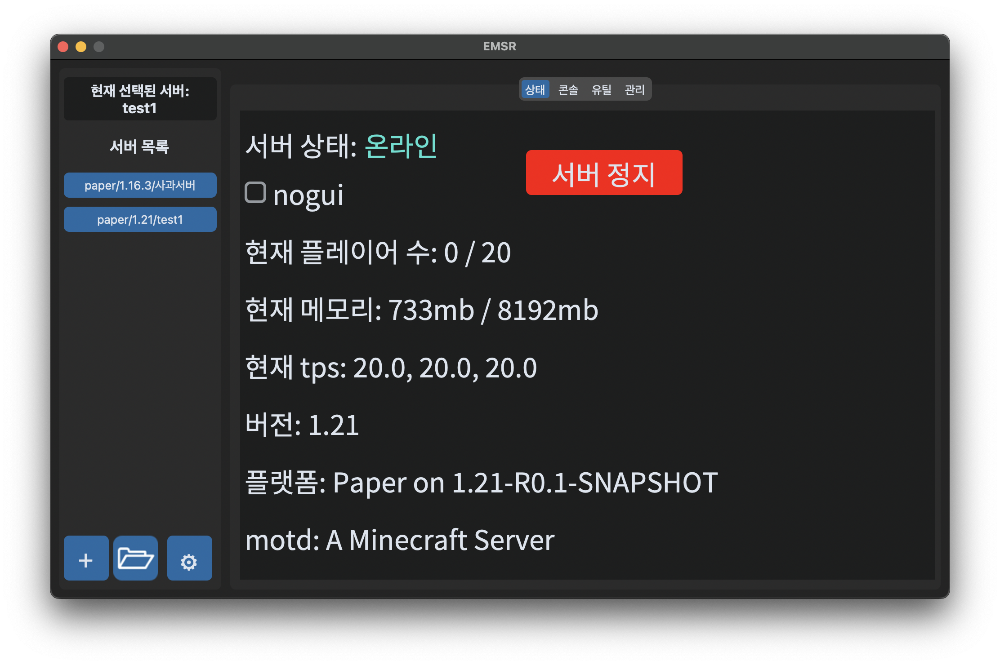
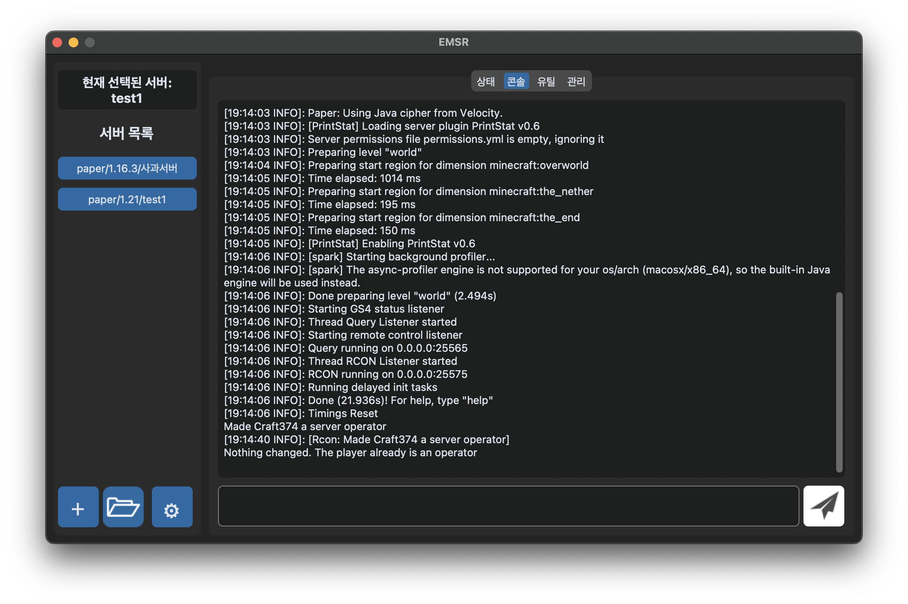
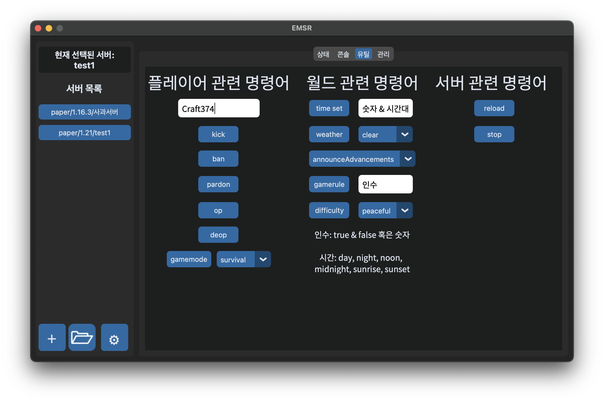

빠르게 만듭니다
아이디어를 바로 형태로 옮깁니다.
아이디어를 바로 형태로 옮깁니다.
규칙과 루프가 보이는 구조를 만듭니다.
반복을 줄이는 도구를 함께 만듭니다.







화면 이해, 음성, 감정 표현을 엮는 캐릭터형 AI 비서 프로젝트.
웹 공부와 함께 증분 게임 구조를 다시 설계하고 있는 실험 축.
Ren'Py로 게임식 대화 흐름과 감상 경험을 정리하는 진행형 프로젝트.
간단한 웹 이미지 편집 도구.
개인 게임 노트 웹 프로젝트.
게임 맵 파일 정리 도구.
멜로디 유사도 분석 프로젝트.
터미널 기반 게임 실험작.
경제 뉴스를 모아 보여주는 실험 프로젝트.